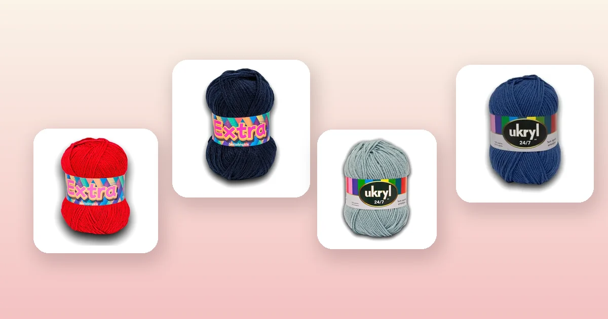

Proyectos de crochet
Ropa para perro a crochet: suéter y bandana paso a paso
Cómo tejer ropa para tu perro a crochet: cómo tomarle las medidas, una tabla de tallas por raza, un suéter básico que se adapta a cualquier perro, una bandana fresca para el verano y qué lana elegir para que aguante la lavadora.

Por qué tejer ropa para tu perro a crochet
La ropa para perro a crochet es uno de los proyectos más buscados por quienes tejen, y tiene sentido: un suéter tejido a la medida le queda mejor a tu perro que uno de tienda, porque cada raza tiene proporciones muy distintas. Un salchicha necesita espalda larga y pecho bajo, un bulldog francés tiene pecho ancho y cuello corto, y un chihuahua necesita una prenda mínima que no le estorbe al caminar.
Los perros pequeños, los de pelo corto y los mayores sienten más el frío en las noches de invierno, y una prenda tejida los abriga sin pesar. Para el verano, una bandana de algodón es el accesorio perfecto: no da calor y les da personalidad en el paseo. En esta guía te enseñamos a medir a tu perro, a tejer un suéter básico que se adapta a cualquier talla y a hacer una bandana en una tarde.
Solo necesitas los puntos básicos de crochet: cadeneta, punto bajo, punto medio alto y punto raso.
Qué lana usar para ropa de perro
La ropa de perro se ensucia, se moja y se lava seguido, así que la lana tiene que aguantar la lavadora y no apelmazarse. Por eso recomendamos lanas acrílicas antialérgicas en lugar de lana natural:
- Lana Ukryl Extra: 100% acrílica y antialérgica, con 220 m por ovillo, así que rinde mucho. Se teje con ganchillo de 4 a 5 mm. Es la opción más económica para suéteres, y viene en colores como azul marino y rojo.
- Lana Ukryl 24/7: antialérgica y con tacto algodón, más suave sobre el pelo. Ovillos de 150 m en tonos como gris salvia y azul jeans.
- Hilo de algodón: para bandanas y prendas de verano. Es fresco y aguanta el lavado frecuente. Prueba el celeste o el mostaza.
Evita las lanas peludas o con brillos sueltos: los perros las muerden y pueden tragar las fibras. Si quieres comparar materiales, revisa nuestra guía de tipos de lana para tejer.
Cómo medir a tu perro
Mide a tu perro de pie, con una huincha de costura y sin apretar. Necesitas tres medidas:
- Contorno de cuello: alrededor del cuello, donde va el collar.
- Contorno de pecho: la parte más ancha del tórax, justo detrás de las patas delanteras. Es la medida más importante.
- Largo de espalda: desde la base del cuello hasta el inicio de la cola.
Mide también la distancia entre el cuello y las patas delanteras: ahí van las aberturas para las patas. Suma 2 a 3 cm de holgura al contorno de pecho para que el suéter no le apriete al respirar ni al moverse.
Estas medidas de referencia te sirven para hacerte una idea, pero cada perro es distinto, así que mide siempre al tuyo:
| Talla | Razas de ejemplo | Cuello | Pecho | Largo espalda | Lana Extra aprox. |
|---|---|---|---|---|---|
| XS | Chihuahua, yorkie pequeño | 18 a 22 cm | 28 a 34 cm | 20 a 24 cm | 1 ovillo |
| S | Poodle toy, maltés, pinscher | 23 a 27 cm | 35 a 42 cm | 25 a 30 cm | 1 a 2 ovillos |
| M | Schnauzer miniatura, bulldog francés | 30 a 36 cm | 45 a 58 cm | 32 a 38 cm | 2 a 3 ovillos |
| L | Cocker, beagle | 36 a 42 cm | 58 a 68 cm | 40 a 46 cm | 3 a 4 ovillos |
La muestra: cómo calcular tus puntos
Como cada perro tiene medidas distintas, el patrón se calcula a partir de una muestra. Teje un cuadrado de 12 × 12 cm en punto medio alto (pma) con la lana y el ganchillo que vas a usar, y cuenta cuántos puntos y cuántas vueltas entran en 10 cm.
Fórmula: puntos necesarios = medida en cm × puntos de la muestra ÷ 10.
Ejemplo talla S con Lana Ukryl Extra y ganchillo de 5 mm: si tu muestra da 14 pma en 10 cm, para un pecho de 38 cm más 2 cm de holgura (40 cm) necesitas 40 × 14 ÷ 10 = 56 puntos. Para un cuello de 25 cm, 25 × 14 ÷ 10 = 35, que redondeamos a 36 para que sea múltiplo de 4. Usaremos este ejemplo en el patrón.
Si quieres saber cuánta lana comprar para otras tallas, nuestra guía de cuánta lana necesito para tejer explica cómo estimarlo a partir de la muestra.
Suéter básico para perro paso a paso
Este suéter se teje de arriba hacia abajo en vueltas, empezando por el cuello. Así puedes probárselo a tu perro mientras avanzas y ajustar el largo sin descoser nada.
1. Cuello elástico
Teje una cadena de 36 cad (tu número de cuello) y únela en círculo con pr, cuidando que no se tuerza. Teje 3 cad (cuentan como 1 pa) y 1 pa en cada cadena. Une con pr. En las vueltas siguientes alterna 1 pa en relieve por delante y 1 pa en relieve por detrás alrededor de los puntos de la vuelta anterior: forma un elástico que se ajusta al cuello sin apretar. Teje entre 4 y 6 vueltas, según el largo de cuello de tu perro.
2. Aumentos hasta el pecho
Cambia a pma. En cada vuelta haz 4 aumentos repartidos (por ejemplo, 1 aum cada 9 puntos en la primera vuelta) hasta llegar a tu número de pecho. En el ejemplo, de 36 a 56 puntos son 5 vueltas de 4 aumentos. Prueba el suéter: el borde debe llegar justo hasta donde empiezan las patas delanteras.
3. Aberturas para las patas
Divide los puntos en tres zonas: espalda (alrededor del 60%), barriga (alrededor del 25%) y dos aberturas para las patas. En el ejemplo de 56 puntos: 34 de espalda, 14 de barriga y 4 para cada pata (34 + 14 + 4 + 4 = 56).
- Espalda: teje en filas de ida y vuelta solo sobre los 34 puntos de la espalda, entre 5 y 7 filas (unos 6 cm, según el tamaño de las patas). Corta el hilo.
- Barriga: salta los 4 puntos de la primera pata, une el hilo y teje las mismas filas sobre los 14 puntos de la barriga.
- Unir: en la vuelta siguiente vuelve a tejer en redondo: teje la barriga, haz 4 cad sobre la abertura de la primera pata, teje la espalda, haz 4 cad sobre la segunda abertura y une con pr. Vuelves a tener 56 puntos.
4. Cuerpo
Sigue tejiendo vueltas de pma sin aumentos hasta que la parte de la barriga llegue a la altura deseada. Si tu perro es macho, termina la barriga entre 8 y 10 cm antes del largo total para que no se moje al orinar. Desde ahí, teje en filas solo sobre los puntos de la espalda hasta completar el largo de espalda, disminuyendo 1 punto al inicio y al final de las últimas 3 filas para redondear la terminación.
5. Borde
Teje una vuelta de pb alrededor de todo el borde inferior y otra alrededor de cada abertura de pata. El borde de pb da una terminación limpia y evita que el tejido se estire con el uso.
Bandana para perro (ideal para el verano)
Una bandana de algodón se teje en una o dos horas y la puede usar tu perro todo el año. Se teje como un triángulo que crece desde la punta.
Fila 1: 2 cad. 3 pb en la 2ª cad desde el ganchillo. (3)
Fila 2: gira, 1 cad. 2 pb en el primer punto, 1 pb, 2 pb en el último. (5)
Siguientes filas: gira, 1 cad, 2 pb en el primer punto, 1 pb en cada punto hasta el último y 2 pb en el último. Cada fila suma 2 puntos. Sigue hasta que el lado más largo mida aproximadamente la mitad del contorno de cuello de tu perro más 6 cm.
Fila final con amarras: teje 40 cad, luego 1 pb en cada punto del lado largo y otras 40 cad. Teje 1 fila de pr sobre cada cadena para que las amarras tengan más cuerpo. Puedes agregar el nombre de tu perro bordado con punto cadeneta en otro color.
Seguridad y comodidad
- Nunca debe apretar. Deberías poder meter dos dedos entre el suéter y el cuerpo de tu perro, sobre todo en el cuello y bajo las patas.
- Sin botones ni adornos pequeños. Los perros los muerden y se los pueden tragar. Si quieres decorar, borda directamente sobre el tejido.
- Supervisa los primeros usos. Observa si camina cómodo, si se rasca o si intenta sacárselo. Algunos perros necesitan unos días para acostumbrarse.
- No lo dejes puesto con calor. El suéter es para paseos frescos o noches frías. Quítaselo dentro de casa con calefacción y en días templados.
- Revisa las hebras escondidas. Una hebra suelta se puede enganchar en una uña o en los dientes.
Cómo lavar la ropa tejida de tu perro
Las lanas acrílicas como Ukryl Extra y Ukryl 24/7 se pueden lavar en lavadora con ciclo delicado, agua fría y dentro de una bolsa de malla. Usa detergente suave, sin perfumes fuertes que puedan irritar la piel de tu perro. Seca siempre en horizontal, nunca colgado, para que no se estire. Más consejos en nuestra guía de cómo lavar y cuidar la lana.
Errores comunes y soluciones
- El cuello queda muy apretado. Teje la cadena inicial con un ganchillo un número más grueso que el resto del suéter: así la cadena no queda rígida.
- Las aberturas de las patas rozan. Las hiciste muy cerca del cuello o muy chicas. Agrega 1 o 2 puntos por abertura y 1 o 2 filas más de alto.
- El suéter se sube hacia el cuello al caminar. La parte de la barriga es muy corta o el cuerpo quedó ancho. Ajusta la barriga para que llegue más atrás y reduce algunos puntos en el cuerpo.
- Quedó grande después de lavarlo. Algunas lanas acrílicas se relajan con el primer lavado. Lava y seca tu muestra antes de medirla para calcular con las medidas reales.